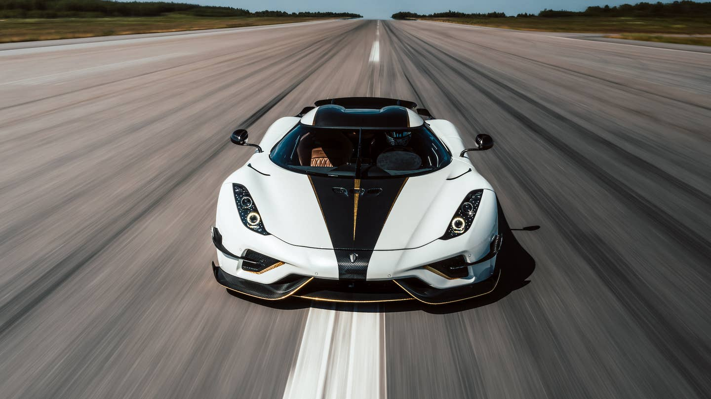

Ranking world's fastest cars from top 10

Manufacturers have been trying to build the quickest car in the world since the dawn of the automobile. Here’s the current list of the fastest cars on the planet. Speed has fascinated humankind for as long as people have been on the planet. From the invention of the wheel to supersonic aircraft, going more quickly means being able to do more things, more efficiently, while also offering advantages over those who must travel more slowly.
This principle very much applies to cars, with manufacturers seeking constantly seeking to make the world’s fastest car ever. And while speed limits and other road users may there is little practical application for really fast cars in day-to-day life, human nature means engineer, designers and drivers alike are always keen to see just how much faster a car can be made to go.
To be a contender for the title of the world’s fastest car, a vehicle will clearly need a hugely powerful engine, or several electric motors and a big battery pack. Aerodynamics play a huge role, too, as cutting through the air and overcoming its friction can make all the difference as speeds increase. How light a car is also impacts its top speed, while a car’s tyres (and their ability to withstand huge rotational forces) play a big part, too.
Below you will find a comprehensive list of the quickest cars in the world, many of which carwow has been lucky enough to drive. You can also take a look at the fastest cars that are available on carwow, too, all of which you can with great offers from trusted dealers.
10. Koenigsegg Jesko Absolut
Top speed: 310mph (in theory)
0-60mph: 2.5 seconds
It’s no surprise that Koenigsegg makes it onto this list twice, as they’re very good at making bonkers hypercars. The Jesko Absolut is powered by a twin-turbocharged V8 producing 1,280hp on normal fuel, or a whopping 1,600hp on E85 race fuel.
This is enough for a 0-60mph sprint tome of 2.5 seconds. Koenigsegg hasn’t tested the top speed of the Jesko Absolut yet, however their computer simulations predict that it’ll do 310mph. We’ll have to wait and see what it can actually do before it can claim the top spot on this list.
9. Lamborghini Aventador SVJ

Top speed: 217mph (in theory)
0-60mph: 2.6 seconds
The fastest naturally-aspirated production car you can buy at the moment comes from the lunatics at Lamborghini. Not all that surprising, really.
The SVJ is the ultimate version of the Lamborghini Aventador supercar and produces a whopping 770hp from its 6.5-litre V12 engine. Its 217mph top speed is actually the same as the standard Aventador S, but the lighter and gripper SVJ will get there quicker and be faster around corners.
8. Pagani Huayra
Top speed: 238mph (in theory)
0-60mph: 3.2 seconds
The Pagani Huayra is a fantastic looking car. Every detail is exquisite, and it’s more than just a pin-up as well. It has an AMG derived twin-turbocharged V12 engine putting out 730hp and 1,000Nm of torque, enough for a top speed of 238mph.
The Huayra is made mostly of carbon fibre to keep the weight down, as well as to make it more rigid, and it’s covered in active aero to help it slip through the air more easily.
7. Aston Martin Valkyrie
Top speed: 250mph (in theory)
0-60mph: 2.2 seconds
You may not think, based on appearances, that the Aston Martin Valkyrie is road legal. It might look like a full-blown LeMans racer, but you can really drive it on the street.
Mounted behind the driver is a 6.5-litre hybrid V12 with 1,160hp, capable of pushing this F1 inspired road-racer from 0-60mph in 2.5 seconds. Not really surprising when you realise that it weighs just over a tonne.
6. Koenigsegg Regera

Top speed: 250mph (in theory)
0-60mph: 2.8 seconds
Matching the Speedtail is the Koenigsegg Regera. This Swedish speed machine comes with a twin-turbo V8 engine and an electric motor that produce a total of 1,500hp.
Unlike any other car on this list, the Regera can go from 0-250mph using just ONE gear. Yep, no matter if you’re cruising at 30mph or aiming to hit its 250mph top speed (on a closed course, not the M1) you’ll be in the same gear. Seems a little bonkers.
5. McLaren Speedtail

Top speed: 250mph (in theory)
0-60mph: 2.5 seconds
McLaren didn’t design the Speedtail to chase world records, but, with a 250mph top speed, it’s the fastest road car it has ever built.
That’s faster than its last three-seat car — the legendary McLaren F1. Its super-slippery bodywork lacks and drag-inducing wings and means it looks like something ripped straight from a futuristic cyberpunk film. Just think about carrying two of your mates at that speed…
4. Rimac Nevera
Top speed: 258mph (in theory)
0-60mph: 1.9 seconds
Electric cars offer instant acceleration thanks to the torque from their electric motors, however the added weight of the batteries can limit them in terms of top speed. This isn’t the case for the Rimac Nevera though.
This ballistic EV hypercar has four electric motors, producing a whopping 1,914hp and 2,300Nm of torque. That’s enough to launch it from 0-60mph in just 1.9 seconds, and it can go on to a top speed of 258mph. It’s made almost entirely out of carbon fibre to keep the weight down, but this isn’t just some stripped-out drag racer. The interior is a lovely place to be and you still get all the luxuries you’d expect of a car that costs £2 million.
3. SSC Tuatara
Top speed: 286mph (in theory)
0-60mph: 2.5 seconds
The American SSC Tuatara (Too-ah-ta-ra in case you’re struggling) comes in second on this list, with a pretty respectable 286mph top speed. That said, it’s not without a little controversy.
You see, SSC claimed the Tuatara actually managed 316mph in October 2020 to make it the world’s fastest car — but later admitted to a GPS error that depicted that speed wrongly. Later tests saw it hit a maximum of 286mph (it averaged 283mph over two runs.) Still not exactly slow, is it?
2. Hennessey Venom F5
Top speed: 272mph (in theory)
0-60mph: 2.6 seconds
Sometimes you really can’t beat a good old-fashioned V8 with a couple of turbos strapped to it, and the Hennessey Venom F5 proves this. The 6.6-litre twin-turbo lump puts out 1,817hp and 1,617Nm of torque, enough to launch it from 0-60mph in 2.6 seconds.
The highest top speed Hennessey have got from this all-American beast so far is 272mph, however they reckon it can go faster. How much faster? Well Hennessey wants to get over 300mph out of the Venom.
1. Bugatti Chiron Supersport 300+

Top speed: 304mph
0-60mph: 2.2 seconds
That old cliche of doing what it says on the tin rears its head here because the Bugatti Chiron Supersport 300+ will do, well, 300mph+. More specifically, it managed 304mph when the French firm decided to unleash it at Volkswagen’s Ehra-Lessien test track.
This 1,600hp mega-machine doesn’t officially hold the world record though, as it only did that run in one direction. To break the record you have to do it twice in opposite directions — which for whatever reason, Bugatti decided not to do.